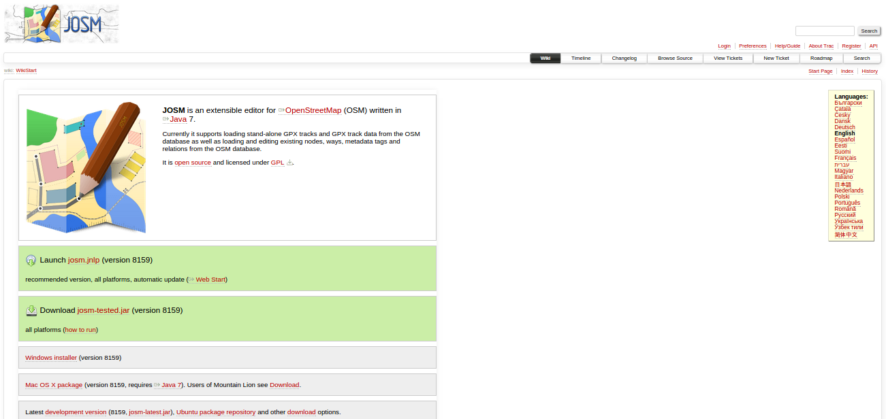
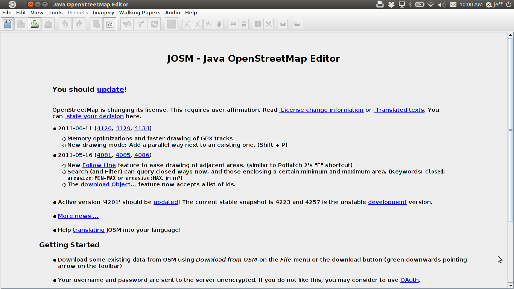
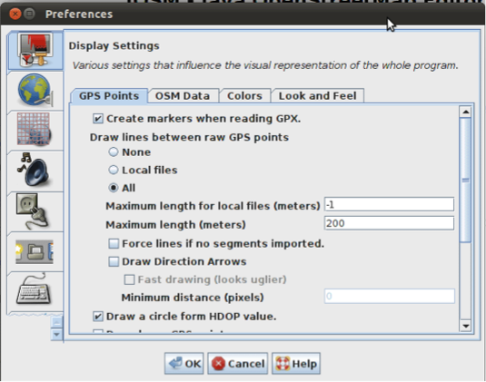
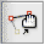

Module 3: Working with JOSM¶
Learning Objectives
Download JOSM
Install JOSM
Set JOSM preferences
Use basic tools
Draw nodes and ways in JOSM
Change objects
Add tags to objects using presets menu
In this module we will learn step-by-step how to download and install JOSM, the Java OpenStreetMap editor. We will change some of the settings in JOSM to make it easier to use. Then we will open a sample map and learn some of the basic operations of the software. Remember in Module 1 when we asked you to draw a map of your town or village? We will conclude this module by drawing your map again, this time digitally. After this you should have a good understanding of how to draw maps in JOSM.
1. Downloading JOSM¶
There is a copy of JOSM in the software/ folder of the package that
accompanies this course. If you don’t have this or would like the most
up-to-date version, follow the instructions here. Otherwise skip ahead
to 2. Installing JOSM.
Open your web browser - this may be Firefox, Chrome, Opera, or Internet Explorer.
In the address bar at the top of the window, enter josm.openstreetmap.de and press Enter:
The website should look something like this:
If you are running Windows, click Windows Installer to download JOSM. If you have a different operating system, click on the link for your system. Your download should begin. In this module we assume that you are using Windows, but the instructions are similar for other operating systems.
2. Installing JOSM¶
You may have problems installing JOSM if Java is not already installed on your computer. Install Java by running
jre-8u25-windows-i586in thesoftware/folder. The exact version may be different. The most up-to-date version can also be downloaded here: http://www.java.com/en/download/Find the JOSM install file on your computer. It should be named
josm-setup.exe. Double-click it to begin setup.Click OK, Next, I Agree and Install. When the installation is complete, click Finish to launch JOSM for the first time. Later when you want to start JOSM, you can do so by clicking on the Start Menu in the lower-left corner of your computer, and clicking the program JOSM.
A window may pop up that asks if you want to update the software. It is not necessary to update since it is new. Click the Cancel button. If you don’t ever want to see this message again, check the box at the bottom before pressing Cancel.
When JOSM starts, it will look something like this:
3. Changing JOSM settings¶
Before we begin using JOSM, it’s a good idea to change some of the settings so that it will be easier to use. To change the settings, go to .
3.1. Adding Bing imagery¶
Note
This may be unnecessary if Bing Imagery is already activated in your copy of JOSM.
In order to use satellite imagery while making our maps, we must make sure that it is enabled in the JOSM settings.
On the left side of the Preferences window there are different icons for different settings. Click the icon that says WMS TMS. You may need to click on the down arrow to find it:
Click on Bing Sat. Then click Activate.
Bing Sat should now be in the list below the Activate button.
3.2. Adding presets¶
We will be using presets so that we can add special data to OSM. Don’t worry if this is unclear right now - we will learn more about presets as we go along.
You should still have the Preferences window open. If not, go to to open the window.
On the left side, click the icon that looks like a grid.
Click the tab at the top that reads Tagging Presets.
Under Available Presets find and select the entry labelled Buildings Indonesia. Click the blue arrow to the right of this box.
Click OK.
3.3. Adding plugins¶
Plugins provide extra functionality for specific purposes. JOSM has many plugins that can be downloaded. To install a plugin follow these steps:
Make sure the Preferences window is open.
Click the Plugin icon on the left:
On the plugin tab, first download the plugin list by clicking Download list. It may take a few minutes.
After the plugin list appears, type the name of the plugin you want to download in the Search box.
When the plugin is found, check the box to the left of the plugin name.
Click OK to download and install the selected plugins.
Note
Skim through the list to see what sort of additional features are available through plugins.
3.4. Changing the language¶
JOSM has been translated into many languages. If it has been translated into your language, you can change it in the Preferences.
Make sure the Preferences window is open.
On the left side, click the icon that looks like a paint can and paintbrush.
At the top of the window, click the tab that says Look and Feel.
Choose your language in the drop-down box next to the word Language.
Click OK.
JOSM must be restarted to save the language settings. Go to .
Start JOSM again by going to the Windows Start Menu. Find JOSM and click on it to start.
4. Basic drawing with JOSM¶
Now let’s open up a sample OSM file which we will use to learn the basic ways to draw maps with JOSM. Note that this map is not real, in that it is not a real map of a real place, so we will not save it on OSM.
The file is located in
osm/and is namedsample.osm.Open JOSM. Go to .
Navigate to the file
sample.osm. Click on it, and then click Open.You should now see a sample map, similar to this:
4.1. Basic operations¶
To move the map left or right, up or down, hold the right mouse button down, and move the mouse.
There are several ways to zoom in and out of the map. With a mouse, the scroll wheel is used to zoom in and out. If you are using a laptop and don’t have a mouse, zoom in and out using the scale bar in the upper-left of the map window. Drag the bar left and right by holding your left mouse down and moving the bar left or right with your mouse.
Look at the sample map. There are a few different types of objects here. There is a river, a forest, some buildings, several roads, and a couple of shops. To select an object, click on it with your left mouse button.
4.2. Points, lines, and shapes (polygons)¶
As you click different objects on the sample map, notice that there are three different types of objects on the map. There are points, lines, and shapes. In mapping, shapes are usually called polygons.
Points are a single location, represented by symbols. On this sample map, there are two points, a clothing shop and a market. The clothing shop is represented by a shirt symbol, and the market is represented by a shopping cart.
There are several lines on the map as well, which represent roads. If you look closely you will see that within the lines, there are points as well. These points don’t have any symbols or other information associated with them, but they help to define where the line is located.
Lastly, there are numerous shapes on the sample map, representing different places - a forest, a river, and buildings. A shape generally represents an area, like a field or a building. A shape is exactly like a line - the only difference is that the line begins at the same point where it ends.
Notice that when you select an object, a list appears to the right of the map in a window called Properties. These are known as tags. Tags are information that is tied to a point, line or shape that describes what it is. For now all you need to know is that this information helps describe whether our object is a forest, a river, a building or something else.
Think about drawing a map by hand, and how you are also drawing points, lines and shapes. What other places are best represented by points? Lines? Shapes?
Now, let’s practise drawing an object (point, line and shape).
On the left side of JOSM is a column of buttons. Many of these buttons open new panels on the right side that provide more information about the map. The most important buttons are at the top of the column. These buttons change what you can do with your mouse. The top four buttons in this column are the most important. They allow you to: Select, Draw, Zoom in and Delete
Until now, you have been using the Select tool, which looks like this:
Before drawing, we need to make sure that nothing is selected. Click in the black space on the map, where it is empty, to make sure nothing is selected.
Click the second button, the Draw tool.
Find an empty area on the map, and double-click with your mouse. This will create a single point.
To draw a line, single-click with the mouse. Move the mouse and click again. Continue until you are happy with the line. To end the line, double-click.
Draw a shape the same way that you draw a line, but finish the shape by double-clicking on the point where you started the line.
4.3. Changing objects¶
Select the forest on the left side of the map. Be sure to click on the line around the forest, not one of the points on the line. Now hold your left mouse button down and drag your mouse. You should be able to move the forest to a new location on the map.
Click on one of the points on the line around the forest. Hold your left mouse button down and drag your mouse. You should be able to move the point. This is how you can change the shape of an object, or move a point.
4.4. Adding presets¶
Now we know how to draw points, lines and shapes, but we still haven’t defined what they represent. We want to be able to say that our points are shops, schools or something else, and whether our shapes are fields, buildings or something else.
Click the Select tool, in the column of buttons on the left.
Select one of the objects that you drew with the Draw tool. On the top menu, click . Move your mouse through the sub-menu to the type of location you would like to define.
When you click on a preset, a form pops up asking you for more information. You do not have to fill in every field, but you may wish to add some important fields, such as the name of the object.
When you are finished entering the information, click Apply Preset. If everything went well, your point, line or shape should change colours or show a symbol. This is because it has now been defined.
Exercise:¶
Now let’s draw a map in order to practise the techniques we’ve learned. You may wish to redraw the map that you drew on paper in Module 1.
Drag the window away from the sample map by holding the right mouse button and dragging your mouse, until you have a nice empty area to draw on.
Use the Draw tool to create points, lines and shapes. Describe what your objects are by selecting from the Presets menu.
When you are finished, you should have your own map, similar to the sample map that we opened in
sample.osm.